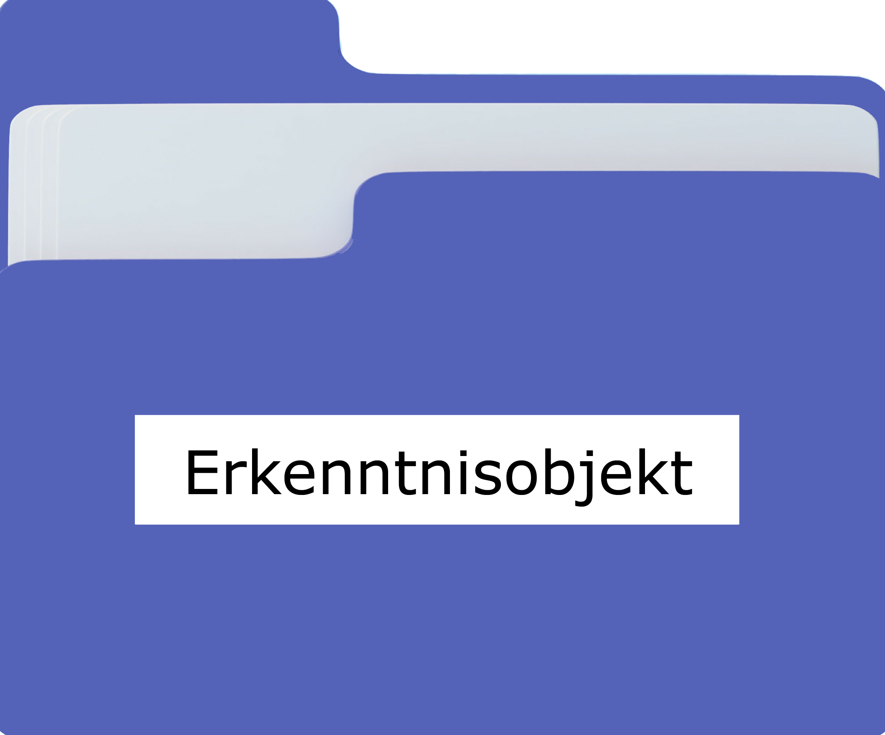
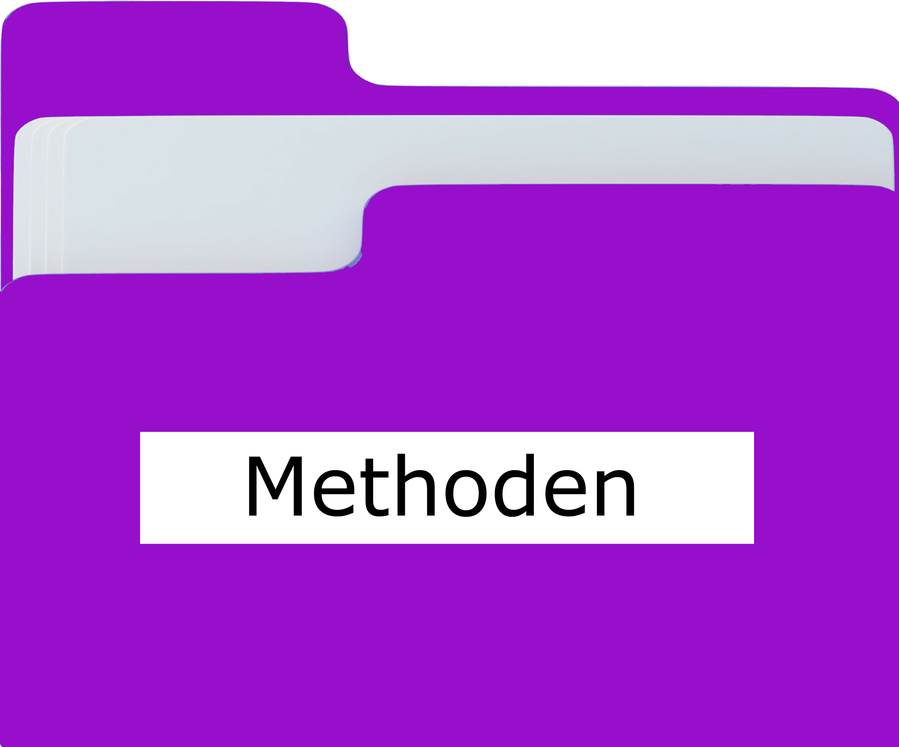
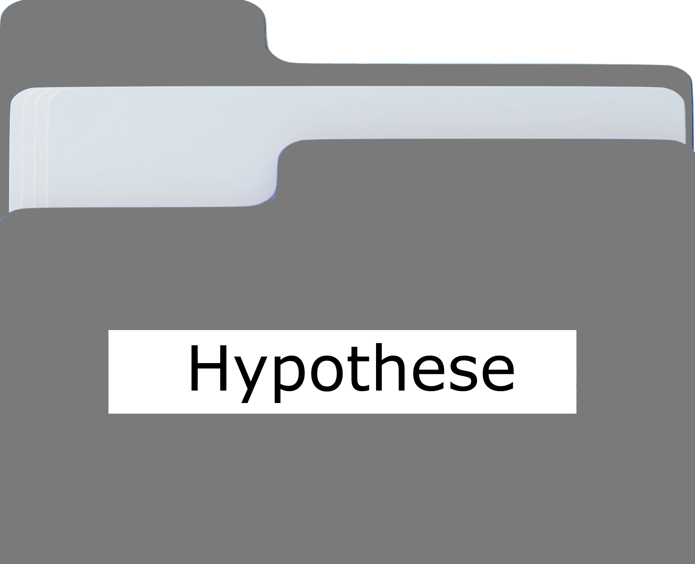
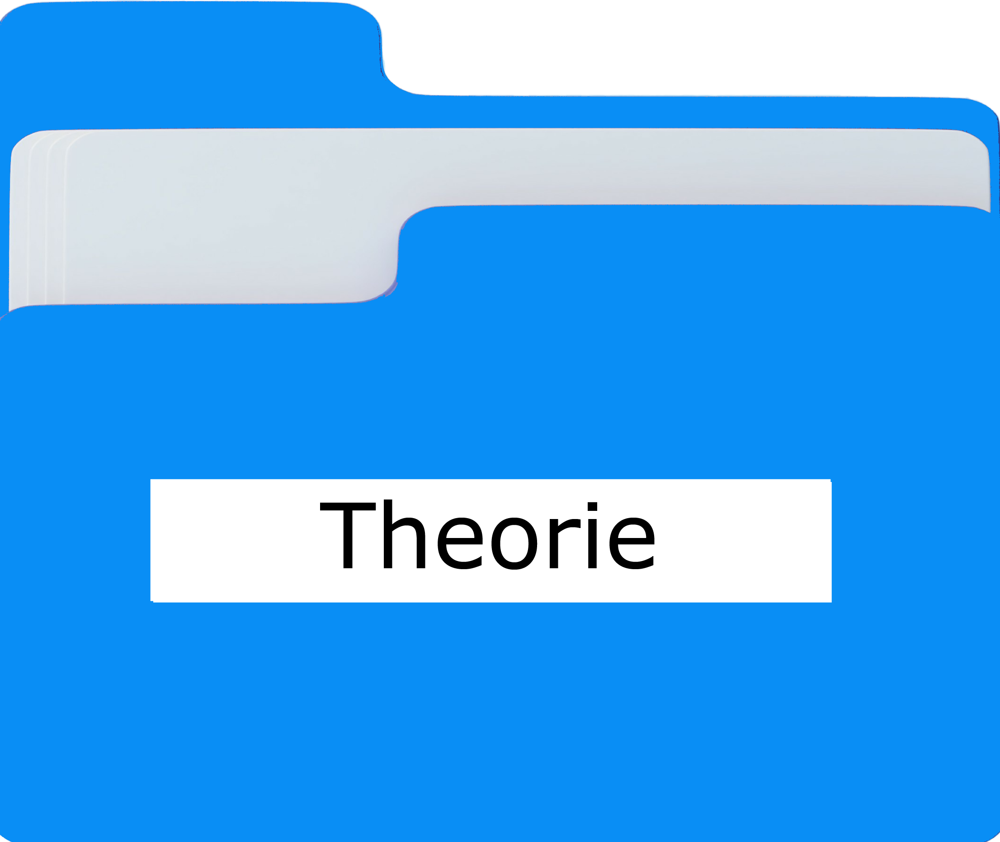
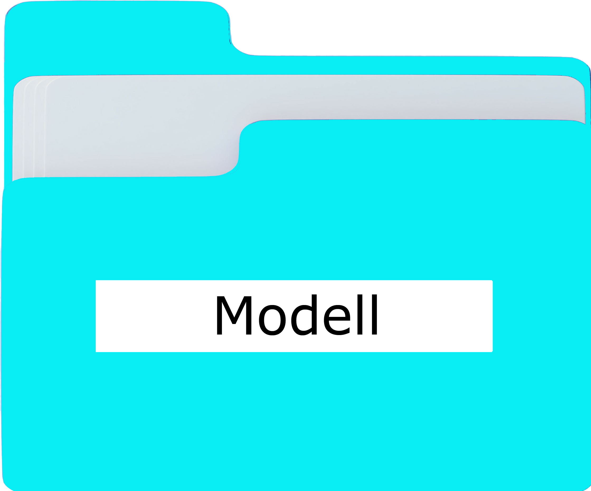
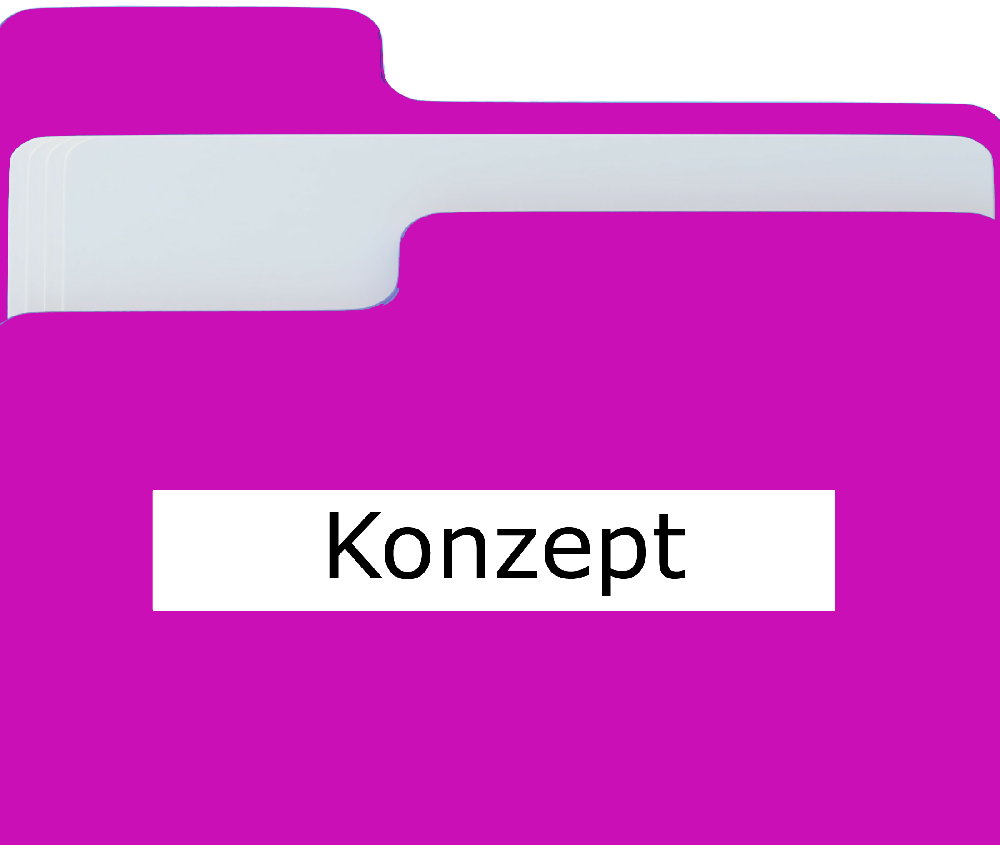

Erkenntnisobjekte sind privatwirtschaftliche Betriebe (Reiseveranstalter), gemeinnützige bzw. öffentliche Betriebe (Destinationsmanagementorgansiationen) sowie die Nachfrager von Leistungen (Veranstaltungsteilnehmer)
Erklärungsziele sind darauf ausgerichtet, die in Märkten und den darin agierenden Akteuren (z. B. Unternehmen, Mitarbeitende, Kunden) ablaufenden Prozesse und Entscheidungen zu verstehen und zu erklären, um daraus Handlungsempfehlungen (siehe Gestaltungsziel) ableiten zu können. So ist es beispielsweise für Unternehmen wichtig, die Prozesse in der Psyche ihrer Kunden (Einflussfaktoren des Beschwerdeverhaltens von Flugreisenden) zu kennen, um diese im Sinne des Unternehmens beeinflussen zu können. Auch kann es wichtig sein, die Ursachen für bestimmte Phänomene (Erfolgsdeterminanten der Social-Media-Kommunikation, Ursachen des Overtourism) zu analysieren, um erfolgreich in Märkten agieren zu können.
Gestaltungsziele sind darauf ausgerichtet, konkrete Handlungsempfehlungen für die Gestaltung von Entscheidungen (Preisbestimmung für hybride Kongresse, Senkung des Ausstoßes klimaschädlicher Gase bei Geschäftsreisen) und Prozessen (Vermeidung von Overtourism) in Märkten zu geben.

Methoden des wissenschaftlichen Arbeitens (Bildung von Hypothesen, Durchführung von Befragungen, Auswertung statistischer Daten, Literaturrecherchen) dienen dazu, die gesetzten Erklärungs- und Erkenntnisziele zu erreichen.

Hypothesen sind Annahmen und Vermutungen über Tatsachen oder Zusammenhänge, die sich noch nicht empirisch bewährt haben. Ein Beispiel wäre die Annahme, dass sich das Umweltbewusstsein einer Person positiv auf die Wahl umweltfreundlicher Verkehrsträger auswirkt. Die Überprüfung von Hypothesen erfolgt mittels empirischer Studien, die dazu führen, dass die entsprechende Hypothese entweder bestätigt (verifiziert) oder nicht bestätigt (falsifiziert) wird. Um den positiven Einfluss des Umweltbewusstseins auf die Verkehrsträgerwahl zu untersuchen, könnte man in einer Befragung prüfen, ob Menschen mit einem hohem Umweltbewusstsein häufiger umweltfreundliche Verkehrsträger nutzen, als Personen mit geringem Umweltbewusstsein.

Theorien setzen setzt sich aus einer Menge von Aussagen (Hypothesen) zusammen, die systematisch in Beziehung zueinander stehen und sich empirisch überprüfen lassen. Werden die Hypothesen mehrfach empirisch bestätigt, hat sich die Theorie als Ansatz zur Erklärung eines in der Realität auftretenden Phänomens bestätigt. Die Erklärung des Ablaufs der Evolution nach Charles Darwin ist ein Beispiel für eine Theorie. Die Evolutionstheorie liefert Erklärungen dafür, wie sich Arten von lebenden Organismen im Laufe der Zeit durch Prozesse wie die natürliche Selektion verändern. Sie ist in der wissenschaftlichen Gemeinschaft weit akzeptiert und wird durch empirische Belege aus verschiedenen Wissenschaftsbereichen (z. B. Genetik, Paläontologie) bestätigt.

Modelle dienen der vereinfachten Darstellung der für eine bestimmte wissenschaftliche Fragestellung relevanter Teile der Realität. Sie können in unterschiedlichen Formen (z. B. Abbildung, gegenständliches Modell, in mathematischer Form) dargestellt werden. Ein Beispiel sind die unterschiedlichen Modelle, die Wissenschaftler nutzen, um die Zusammenhänge zwischen den drei Dimensionen der Nachhaltigkeit darzustellen.
